전기공사기사 (2013-06-02 기출문제)
1과목: 전기응용 및 공사재료
1. 완전 확산성인 직경 20 ㎝의 외구 속에 광도 100cd의 전구를 넣었을 때 외구 표면의 휘도[cd/cm2]는? (단, 외구의 흡수율은 10%이고 외구 내면의 반사는 무시한다.)
- 약 1.8
- 약 0.9
- 약 0.6
- 약 0.3
(정답률: 54%)

2. 교류 200V, 정류기 전압강하 10V인 단상반파 정류회로의 저항부하의 직류전압은?
- 약 80 V
- 약 155 V
- 약 220 V
- 약 210 V
(정답률: 80%)
3. 직류전동기와 비교한 교류전동기의 특성 설명으로 틀린 것은?
- 전원을 간단히 얻을 수 있다.
- 정밀한 제어가 된다.
- 가격이 싸다.
- 취급이 간단하고 운전이 쉽다.
(정답률: 65%)
4. 극수 P의 3상 유도전동기가 주파수 f[Hz], 슬립 s, 토크 T[N · m]로 회전하고 있을 때의 기계적출력[W]은?
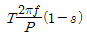
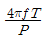
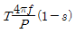
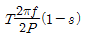
(정답률: 77%)
5. 금속이나 반도체에 전류를 흘리고 이것과 직각 방향으로 자계를 가하면 전류와 자계의 방향을 포함하는 면에 대하여 수직적인 방향으로 기전력이 발생한다. 이러한 현상은?
- 핀치(pinch)효과
- 펠티어(peltier) 효과
- 제벡(seebeck)효과
- 홀(hall)효과
(정답률: 80%)
6. 전기 집진기의 구성 요소가 아닌 것은?
- 더스트층
- 방전전극
- 집진전극
- 전자석
(정답률: 74%)
7. 동륜상의 중량이 75[t]인 기관차의 최대 견인력[kg]은? (단, 궤조의 점착계수는 0.2로 한다.)
- 5000
- 10000
- 15000
- 75000
(정답률: 88%)
8. 저항 온도계의 금속 저항체의 재료로 사용되지 않는 것은?
- 백금
- 니켈
- 구리
- 텅스텐
(정답률: 58%)
9. 백색형광등의 상관 색온도 범위는?
- 5700~7100[K]
- 400~5400[K]
- 3900~4500[K]
- 3200~3700[K]
(정답률: 73%)
10. 다음 기기 중 초음파를 응용한 기기가 아닌 것은?
- 잠수함 탐지기
- 어군 탐지기
- 의료용 세척기
- 팩시밀리
(정답률: 79%)
11. 배전반 및 분전반을 넣은 함에 대한 설명으로 잘못된 것은?
- 난연성 합성수지로 된 것은 두께 2.5㎜ 이상으로 내 아크성일 것
- 반의 뒤쪽은 배선 및 기구를 배치하지 말 것
- 절연저항 및 전선접속단자의 점검이 용이할 것
- 강판제의 것은 두께 1.2㎜ 이상일 것
(정답률: 78%)
12. 고압 및 특고압 케이블이 아닌 것은?
- 알루미늄피 케이블
- EP 고무절연 클로로프렌시스 케이블
- 가교 폴리에틸렌 절연 비닐시스 케이블
- 콤바인덕트 케이블
(정답률: 66%)
13. 플로어 덕트 설치 그림(약식)중 블랭크 와셔가 사용되어야 할 부분은?
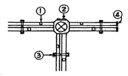
- ①
- ②
- ③
- ④
(정답률: 86%)
14. 변압기에 변압기유를 사용하는 이유와 관계가 먼 것은?
- 절연을 좋게 하기 위하여
- 냉각을 좋게 하기 위하여
- 변성을 좋게 하기 위하여
- 열발산을 좋게 하기 위하여
(정답률: 80%)
15. 다음 중 분전함에 내장되는 부품은?
- COS
- VCB
- UVR
- MCCB
(정답률: 81%)
16. 납축전지의 양극재료는?
- 2H2SO4
- Pb
- PbSO2
- PbO2
(정답률: 53%)
17. 부식성이 대부분의 환경에서 양호한 피뢰 시스템의 재료로 사용되는 것은?
- 알루미늄
- 스테인리스강
- 납
- 용융아연도강
(정답률: 67%)
18. 변압기의 절연 종별에서 A종 절연의 최고 허용온도[℃]는?
- 155
- 120
- 1⑤
- 90
(정답률: 80%)
19. 고압 차단기 중 외기의 영향을 받지 않는 차단기는?
- 공기차단기
- 극소유량차단기
- 유입차단기
- 진공차단기
(정답률: 81%)
20. 지선과 지선용 근가를 연결하는 금구는?
- U볼트
- 지선롯트
- 암밴드
- 지선밴드
(정답률: 76%)
2과목: 전력공학
21. 표피효과에 대한 설명으로 옳은 것은?
- 표피효과는 주파수에 비례한다.
- 표피효과는 전선의 단면적에 반비례한다.
- 표피효과는 전선의 비투자율에 반비례한다.
- 표피효과는 전선의 도전률에 반비례한다.
(정답률: 20%)
22. 보일러에서 흡수 열량이 가장 큰 곳은?
- 절탄기
- 수냉벽
- 과열기
- 공기예열기
(정답률: 18%)
23. 다음 중 전력원선도에서 알 수 없는 것은?
- 전력
- 조상기 용량
- 손실
- 코로나 손실
(정답률: 23%)
24. 배전선로의 주상변압기에서 고압측-저압측에 주로 사용되는 보호장치의 조합한 것은?
- 고압측: 프라이머리 컷아웃 스위치, 저압측: 캐치홀더
- 고압측: 캐치홀더, 저압측: 프라이머리 컷아웃 스위치
- 고압측: 리클로저, 저압측: 라인퓨즈
- 고압측: 라인퓨즈, 압측: 리클로저
(정답률: 19%)
25. 송전계통의 한 부분이 그림에서와 같이 3상변압기로 1차측은 △로, 2차측은 Y로 중성점이 접지되어 있을 경우, 1차측에 흐르는 영상전류는?
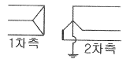
- 1차측 변압기 내부와 1차측 선로에서 반드시 0 이다.
- 1차측 선로에서 ∞ 이다.
- 1차측 변압기 내부에서는 반드시 0 이다.
- 1차측 선로에서 반드시 0 이다.
(정답률: 16%)
26. 조정지 용량 100000[m3], 유효낙차 100[m]인 수력발전소가 있다. 조정지의 전 용량을 사용하여 발생될 수 있는 전력량은 약 몇 [kWh]인가? (단, 수차 및 발전기의 종합효율을 75%로 하고 유효낙차는 거의 일정하다고 본다.)
- 20417
- 25248
- 30448
- 42540
(정답률: 12%)
27. 저압 뱅킹 배선방식에서 캐스케이딩 이란 무엇인가?
- 변압기의 전압 배분을 자동으로 하는 것
- 수전단 전압이 송전단 전압보다 높아지는 현상
- 저압선에 고장이 생기면 건전한 변압기의 일부 또는 전부가 차단되는 현상
- 전압 동요가 일어나면 연쇄적으로 파동치는 현상
(정답률: 22%)
28. 공기차단기(ABB)의 공기 압력은 일반적으로 몇 [㎏/cm2]정도 되는가?
- 5~10
- 15~30
- 30~45
- 45~55
(정답률: 21%)
29. 송전선로의 일반회로정수가 A=0.7, C=j1.95×10-3, D=0.9라 하면 B의 값은 약 얼마인가?
- j90
- -j90
- j190
- -190
(정답률: 17%)
30. 정격전압 66[kV]인 3상3선식 송전선에서 1선의 리액턴스가 15[Ω]일 때 이를 100[MVA]기준으로 환산한 %리액턴스는?
- 17.2
- 34.4
- 51.6
- 68.8
(정답률: 21%)
31. 공장이나 빌딩에 200[V] 전압을 400[V]로 승압하여 배전을 할 때, 400[V] 배전과 관계없는 것은?
- 전선 등 재료의 절감
- 전압변동률의 감소
- 배선의 전력손실 경감
- 변압기 용량의 절감
(정답률: 17%)
32. 변압기 보호용 비율차동계전기를 사용하여 △-Y 결선의 변압기를 보호하려고 한다. 이 때 변압기 1, 2차측에 설치하는 변류기의 결선 방식은? (단, 위상 보정기능이 없는 경우이다.)
- △ - △
- △ - Y
- Y - △
- Y - Y
(정답률: 21%)
33. 송전계통의 안정도 향상 대책이 아닌 것은?
- 계통의 직렬 리액턴스를 증가시킨다.
- 전압 변동을 적게 한다.
- 고장시간, 고장전류를 적게 한다.
- 고속도 재폐로 방식을 채용한다.
(정답률: 25%)
34. 부하역률이 0.6인 경우, 전력용 콘덴서를 병렬로 접속하여 합성역률을 0.9로 개선하면 전원측 선로의 전력손실은 처음 것의 약 몇 % 로 감소되는가?
- 38.5
- 44.4
- 56.6
- 62.8
(정답률: 17%)
35. 부하의 불평형으로 인하여 발생하는 각 상별 불평형 전압을 평형되게 하고 선로손실을 경감시킬 목적으로 밸런서가 사용된다. 다음 중 이 밸런서의 설치가 가장 필요한 배전 방식은?
- 단상 2선식
- 3상 3선식
- 단상 3선식
- 3상 4선식
(정답률: 18%)
36. 원자로의 감속재가 구비하여야 할 사항으로 적합하지 않은 것은?
- 원자량이 큰 원소일 것
- 중성자의 흡수 단면적이 적을 것
- 중성자와의 충돌 확률이 높을 것
- 감속비가 클 것
(정답률: 17%)
37. 다음 중 모선보호용 계전기로 사용하면 가장 유리한 것은?
- 재폐로계전기
- 과전류계전기
- 역상계전기
- 거리계전기
(정답률: 16%)
38. 송전선의 전압변동률을 나타내는 식
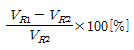
에서 VR1은 무엇인가?- 부하시 수전단 전압
- 무부하시 수전단 전압
- 부하시 송전단 전압
- 무부하시 송전단 전압
(정답률: 18%)
39. 단도체 대신 같은 단면적의 복도체를 사용할 때 옳은 것은?
- 인덕턴스가 증가한다.
- 코로나 개시전압이 높아진다.
- 선로의 작용정전용량이 감소한다.
- 전선 표면의 전위경도를 증가시킨다.
(정답률: 21%)
40. 송배전선로의 고장전류 계산에서 영상 임피던스가 필요한 경우는?
- 3상 단락 계산
- 선간 단락 계산
- 1선 지락 계산
- 3선 단락 계산
(정답률: 21%)
3과목: 전기기기
41. 3상 동기발전기의 매극 매상의 슬롯수를 3 이라 할 때 분포권 계수는?
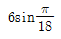
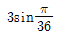
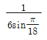
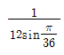
(정답률: 24%)
42. 1차 Y, 2차 △로 결선하고 1차에 선간전압 3300V 를 가했을 때의 무부하 2차 선간전압은 몇 [V]인가? (단, 전압비는 30:1 이다.) (문제 오류로 실제 시험에서는 모두 정답처리 되었습니다. 여기서는 가번을 누르면 정답 처리 됩니다.)
- 110
- 190.5
- 330.5
- 380.5
(정답률: 21%)
43. 권수비 a=6600/220, 60Hz, 변압기의 철심 단면적 0.02m2, 최대자속밀도 1.2Wb/m2 일 때 1차 유기기전력은 약 몇 [V] 인가?
- 1407
- 3521
- 42198
- 49814
(정답률: 16%)
44. 단상 유도전압조정기에서 1차 전원전압을 V1 이라고 하고, 2차의 유도전압을 E2 라고 할 때 부하 단자전압을 연속적으로 가변할 수 있는 조정 범위는?
- 0 ~ V1 까지
- V1 + E2 까지
- V1 - E2 까지
- V1 + E2에서 V1 - E2 까지
(정답률: 20%)
45. 10 kVA, 2000/100V, 변압기에서 1차에 환산한 등가 임피던스가 6.2+j7Ω 일 때 %리액턴스 강하는?
- 2.75
- 1.75
- 0.75
- 0.55
(정답률: 17%)
46. 3상 권선형 유도전동기의 전부하 슬립이 4%, 2차 1상의 저항이 0.3Ω이다. 이 유도전동기의 기동 토크를 전부하 토크와 같도록 하기 위해 외부에서 2차에 삽입해야 할 저항의 크기는 몇 [Ω]인가?
- 2.8
- 3.5
- 4.8
- 7.2
(정답률: 14%)
47. 1차 및 2차 정격전압이 같은 2대의 변압기가 있다. 그 용량 및 임피던스 강하가 A 변압기는 5kVA, 3%, B 변압기는 20kVA, 2%일 때 이것을 병렬 운전하는 경우 부하를 분담하는 비(A:B)는?
- 1:4
- 1:6
- 2:3
- 3:2
(정답률: 17%)
48. 브러시의 위치를 이동시켜 회전방향을 역회전 시킬수 있는 단상 유도전동기는?
- 반발 기동형 전동기
- 세이딩코일형 전동기
- 분상기동형 전동기
- 콘덴서 전동기
(정답률: 19%)
49. 직류 발전기에서 섬락이 생기는 가장 큰 원인은?
- 장시간 운전
- 부하의 급변
- 경부하 운전
- 회전속도 저하
(정답률: 19%)
50. 단상반파 정류회로에서 실효치 E와 직류 평균치 Edo와의 관계식으로 옳은 것은?
- Edo = 0.90E[V]
- Edo = 0.81E[V]
- Edo = 0.67E[V]
- Edo = 0.45E[V]
(정답률: 22%)
51. 유도 전동기로 동기 전동기를 기동하는 경우, 유도 전동기의 극수는 동기기의 그것보다 2극 적은 것을 사용한다. 옳은 이유는? (단, s는 슬립이며 Ns는 동기속도이다.)
- 같은 극수로는 유도기는 동기 속도보다 sNs 만큼 늦으므로
- 같은 극수로는 유도기는 동기 속도보다 (1-s)Ns 만큼 늦으므로
- 같은 극수로는 유도기는 동기 속도보다 sNs 만큼 빠르므로
- 같은 극수로는 유도기는 동기 속도보다 (1-s)Ns 만큼 빠르므로
(정답률: 19%)
52. 직류 전동기에서 정출력 가변속도의 용도에 적합한 속도제어법은?
- 일그너제어
- 계자제어
- 저항제어
- 전아제어
(정답률: 18%)
53. 속도 특성곡선 및 토크 특성곡선을 나타낸 전동기는?
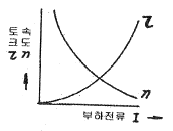
- 직류 분권전동기
- 직류 직권전동기
- 직류 복권전동기
- 타여자 전동기
(정답률: 18%)
54. 사이클로 컨버터(cyclo converter)란?
- 실리콘 양방향성 소자이다.
- 제어정류기를 사용한 주파수 변환기이다.
- 직류 제어소자이다.
- 전류 제어소자이다.
(정답률: 19%)
55. 포화하고 있지 않은 직류발전기의 회전수가 4배로 증가되었을 때 기전력을 전과 같은 값으로 하려면 여자를 속도 변화 전에 비해 얼마로 하여야 하는가?
- 1/2
- 1/3
- 1/4
- 1/8
(정답률: 21%)
56. 직류 직권 전동기가 전차용에 사용되는 이유는?
- 속도가 클 때 토크가 크다.
- 토크가 클 때 속도가 적다.
- 기동토크가 크고 속도는 불변이다.
- 토크는 일정하고 속도는 전류에 비례한다.
(정답률: 15%)
57. 다음 중 3상 권선형 유도 전동기의 기동법은?
- 2차 저항법
- 전전압 기동법
- 기동 보상기법
- Y - △ 기동법
(정답률: 19%)
58. 동기 리액턴스 xs=10[Ω], 전기자 저항 ra-0.1[Ω]인 Y결선 3상 동기발전기가 있다. 1상의 단자전압은 V-4000V 이고 유기 기전력 E=6400V이다. 부하각 δ=30° 라고 하면 발전기의 3상 출력[kW]은 약 얼마인가?
- 1250
- 2830
- 3840
- 4650
(정답률: 17%)
59. 다음 그림은 어떤 전동기의 1차측 결선도인가?
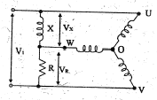
- 모노사이클릭형 전동기
- 반발 유도전동기
- 콘덴서 전동기
- 반발기동형 단상 유도전동기
(정답률: 19%)
60. 10000 kVA, 6000 V, 60 Hz, 24극, 단락비 1,2인 3상 동기발전기의 동기 임피던스[Ω]는?
- 1
- 3
- 10
- 30
(정답률: 14%)
4과목: 회로이론 및 제어공학
61. 저항 R[Ω] 3개를 Y로 접속한 회로에 전압 200[V]의 3상 교류전원을 인가시 선전류가 10[A]라면 이 3개의 저항을 △로 접속하고 동일전원을 인가시 선전류는 몇 [A]인가?
- 10[A]
- 10√3[A]
- 30[A]
- 30√3[A]
(정답률: 15%)
62. RLC 직렬회로에서 전원 전압을 V 라 하고, L, C 에 걸리는 전압을 각각 VL 및 VC 라면 선택도 Q 는?
- CR/L
- CL/R
- V/VL
- VC/V
(정답률: 15%)
63. 전원의 내부임피던스가 순저항 R과 리액턴스 X로 구성되고 외부에 부하저항 RL을 연결하여 최대전력을 전달하려면 RL의 값은?
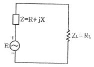
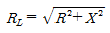
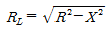
- RL=R
- RL=R+X
(정답률: 21%)
64. 그림과 같은 회로와 쌍대(dual)가 될 수 있는 회로는?
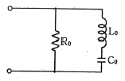
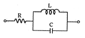
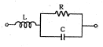
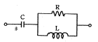
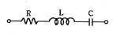
(정답률: 18%)
65. 그림과 같은 π형 회로에 있어서 어드미턴스 파라미터 중 Y21은 어느 것인가?
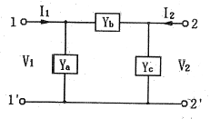
- Ya
- - Yb
- Ya + Yb
- Yb + Yc
(정답률: 16%)
66. 그림의 회로에서 절점전압 Va[V]와 지로전류 Ia[A]의 크기는?
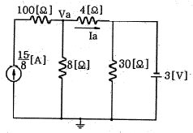
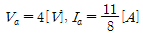
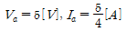
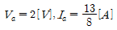
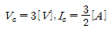
(정답률: 10%)
67. 역률각이 45° 인 3상 평형부하에 상순이 a-b-c 이고 Y결선된 회로에 Va=220[V]인 상전압을 가하니 Ia=10[A]의 전류가 흘렀다. 전력계의 지시값[W]은?
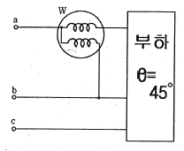
- 1555.63[W]
- 2694.44[W]
- 3047.19[W]
- 3680.67[W]
(정답률: 8%)
68. 선로의 단위 길이당 분포인덕턴스, 저항, 정전용량, 누설 컨덕턴스를 각각 L, R, C, G 라 하면 전파정수는?
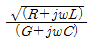
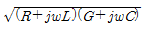
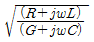
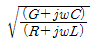
(정답률: 19%)
69. 그림의 RL 직렬회로에서 스위치를 닫은 후 몇 초 후에 회로의 전류가 10[mA]가 되는가?
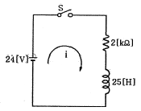
- 0.011[sec]
- 0.016[sec]
- 0.022[sec]
- 0.031[sec]
(정답률: 13%)
70. 전류의 대칭분을 I0, I1, I2 유기 기전력 및 단자전압의 대칭분을 Ea, Eb, Ec 및 V0, V1, V2라 할 때 3상 교류발전기의 기본식 중 정상분 V1 값은? (단, Z0, Z1, Z2 는 영상, 정상, 역상 임피던스이다.)
- -Z0I0
- -Z2I2
- Ea-Z1I1
- Eb-Z2I2
(정답률: 20%)
71. 시간 지정이 있는 특수한 시스템이 미분 방정식
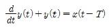
로 표시될 때 이 스스템의 전달 함수는?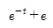
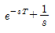
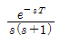
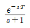
(정답률: 15%)
72. 일정 입력에 대해 잔류 편차가 있는 제어계는?
- 비례 제어계
- 적분 제어계
- 비례 적분 제어계
- 비례 적분 미분 제어계
(정답률: 18%)
73. 그림과 같은 논리회로에서 출력 F의 값은?
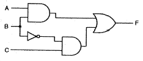
- A
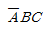
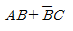
- (A+B)C
(정답률: 21%)
74. 그림과 같은 요소는 제어계의 어떤 요소인가?
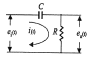
- 적분요소
- 미분요소
- 1차 지연요소
- 1차 지연 미분요소
(정답률: 13%)
75. 개루프 전달함수가 다음과 같은 계에서 단위속도 입력에 대한 정상 편차는?
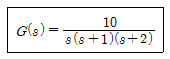
- 0.2
- 0.25
- 0.38
- 0.5
(정답률: 15%)
76. 보상기
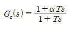
가 진상 보상기가 되기 위한 조건은?- α=0
- α=1
- α<1
- α>1
(정답률: 17%)
77. 다음 안정도 판별법 중 G(s)H(s)의 극점과 영점이 우반 평면에 있을 경우 판정 불가능한 방법은?
- Routh - Hurwitz 판별법
- Bode 선도
- Nyquist 판별법
- 근궤적법
(정답률: 16%)
78.
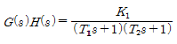
의 개루프 전달함수에 대한 Nyquist 안정도 판별에 대한 설명으로 옳은 것은?- K1, T1 및 T2의 값에 대하여 조건부 안정
- K1, T1 및 T2의 값에 관계없이 안정
- K1 값에 대하여 조건부 안정
- K1, T1 및 T2의 모든 양의 값에 대하여 안정
(정답률: 13%)
79. 그림의 회로에서 출력전압 Vo는 입력전압 Vi와 비교할 때 위상 변화는?
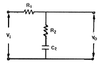
- 위상이 뒤진다.
- 위상이 앞선다.
- 동상이다.
- 낮은 주파수에서는 위상이 뒤떨어지고 높은 주파수에서는 앞선다.
(정답률: 13%)
80. 개루프 전달함수 그림참고m1의 이탈점에 해당되는 것은?
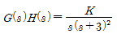
- 1
- -1
- 2
- -2
(정답률: 15%)
5과목: 전기설비기술기준 및 판단기준
81. 사용전압 35kV인 특고압 가공전선로에 특고압 절연전선을 사용한 경우 전선의 지표상 높이는 최소 몇 [m]이상이어야 하는가?
- 13.72
- 12.04
- 10
- 8
(정답률: 16%)
82. 전압 구분에서 고압에 해당되는 것은?
- 직류는 750V를, 교류는 600V를 초과하고 7kV 이하인 것
- 직류는 600V를, 교류는 750V를 초과하고 7kV 이하인 것
- 직류는 750V를, 교류는 600V를 초과하고 9kV 이하인 것
- 직류는 600V를, 교류는 750V를 초과하고 9kV 이하인 것
(정답률: 24%)
83. 금속 덕트 공사에 의한 저압 옥내배선에서 금속 덕트에 넣은 전선의 단면적의 합계는 덕트 내부 단면적의 얼마 이하이어야 하는가?
- 20 % 이하
- 30 % 이하
- 40 % 이하
- 50 % 이하
(정답률: 23%)
84. 출퇴표시등 회로에 전기를 공급하기 위한 변압기는 1차측 전로의 대지전압과 2차측 전로의 사용전압이 각각 몇 [V] 이하인 절연 변압기이어야 하는가?
- 대지전압: 150V, 사용전압: 30V
- 대지전압: 150V, 사용전압: 60V
- 대지전압: 300V, 사용전압: 30V
- 대지전압: 300V, 사용전압: 60V
(정답률: 23%)
85. 고압 가공전선로의 가공지선으로 나경동선을 사용하는 경우의 지름은 몇 [mm] 이상이어야 하는가?
- 3.2
- 4.0
- 5.5
- 6.0
(정답률: 19%)
86. 최대사용전압 154kV 중성점 직접 접지식 전로에 시험전압을 전로와 대지사이에 몇 [kV]를 연속으로 10분간 가하여 절연내력을 시험하였을 때 이에 견디어야하는가?
- 231
- 192.5
- 141.68
- 110.88
(정답률: 19%)
87. 일정용량 이상의 특고압용 변압기에 내부고장이 생겼을 경우, 자동적으로 이를 전로로부터 자동차단하는 장치 또는 경보장치를 시설해야 하는 뱅크 용량은?
- 1000kVA이상, 5000kVA미만
- 5000kVA이상, 10000kVA미만
- 10000kVA이상, 15000kVA미만
- 15000kVA이상, 20000kVA미만
(정답률: 19%)
88. 제3종 접지공사에 사용되는 접지선의 굵기는 공칭단면적 몇 [mm2]이상의 연동선을 사용하여야 하는가?
- 0.75
- 2.5
- 6
- 16
(정답률: 18%)
89. 시가지에 시설하는 통신선은 특고압 가공전선로의 지지물에 시설하여서는 아니 된다. 그러나 통신선이 절연전선과 동등 이상의 절연효력이 있고 인장강도 5.26kN 이상의 것 또는 지름 몇 [㎜] 이상의 절연전선 또는 광섬유 케이블인 것이면 시설이 가능한가?
- 4
- 4.5
- 5
- 5.5
(정답률: 16%)
90. 무대, 무대마루 밑, 오케스트라 박스, 영사실 기타 사람이나 무대 도구가 접촉할 우려가 있는 곳에 시설하는 저압 옥내배선 · 전구선 또는 이동전선은 사용전압이 몇[V] 미만이어야 하는가?
- 60
- 110
- 220
- 400
(정답률: 23%)
91. 전기욕기에 전기를 공급하는 전원장치는 전기욕기용으로 내장되어 있는 2차측 전로의 사용전압을 몇 [V] 이하로 한정하고 있는가?
- 6
- 10
- 12
- 15
(정답률: 17%)
92. 플로어 덕트 공사에 의한 저압 옥내배선 공사에 적합하지 않은 것은?
- 사용전압 400V 미만일 것
- 덕트의 끝 부분은 막을 것
- 제3종 접지공사를 할 것
- 옥외용 비닐절연전선을 사용할 것
(정답률: 24%)
93. 가공 방식에 의하여 시설하는 직류식 전기 철도용 전차선로는 사용전압이 직류 고압인 경우 어느 곳에 시설하여야 하는가?
- 전차선 높이가 5m 이상인 경우 사람이 쉽게 출입할 수 없는 전용 부지 안에 시설
- 사람이 쉽게 출입할 수 있는 전용 부지 안에 시설
- 전기철도의 전용 부지 안에 시설
- 교통이 빈번하지 않은 시가지 외에 시설
(정답률: 18%)
94. 고압 가공전선으로 경동선 또는 내열 동합금선을 사용할 때 그 안전율은 최소 얼마 이상이 되는 이도로 시설하여야 하는가?
- 2.0
- 2.2
- 2.5
- 3.3
(정답률: 22%)
95. 철탑의 강도계산에 사용하는 이상 시 상정하중이 가하여지는 경우의 그 이상 시 상정 하중에 대한 철탑의 기초에 대한 안전율은 얼마 이상 이어야 하는가?
- 1.2
- 1.33
- 1.5
- 2
(정답률: 20%)
96. 저압 가공전선 또는 고압 가공전선이 도로를 횡단할 때 지표상의 높이는 몇 [m] 이상으로 하여야 하는가? (단, 농로 기타 교통이 번잡하지 않은 도로 및 횡단보도교는 제외한다.)
- 4
- 5
- 6
- 7
(정답률: 18%)
97. 저압 옥측전선로의 공사에서 목조 조영물에 시설이 가능한 공사는?
- 금속피복을 한 케이블 공사
- 합성수지관 공사
- 금속관 공사
- 버스덕트 공사
(정답률: 17%)
98. 판단기준 용어에서 “제2차 접근상태” 란 가공전선이 다른 시설물과 접근하는 경우에 그 가공전선이 다른 시설물의 위쪽 또는 옆쪽에서 수평거리로 몇 [m] 미만인 곳에 시설되는 상태를 말하는가?
- 2
- 3
- 4
- 5
(정답률: 19%)
99. 가공전선로의 지지물에 취급자가 오르고 내리는데 사용하는 발판 볼트 등은 원칙적으로 지표상 몇 [m] 미만에 시설하여서는 아니 되는가?
- 1.2
- 1.5
- 1.8
- 2.0
(정답률: 23%)
100. 다음 전선로에 대한 설명으로 옳은 것은?
- 발전소·변전소·개폐소, 이에 준하는 곳, 전기사용장소 상호간의 전선 및 이를 지지 하거나 수용하는 시설물
- 발전소·변전소·개폐소, 이에 준하는 곳, 전기사용장소 상호간의 전선 및 전차선을 지지 하거나 수용하는 시설물
- 통상의 사용 상태에서 전기가 통하고 있는 전선
- 통상의 사용 상태에서 전기를 절연한 전선
(정답률: 15%)